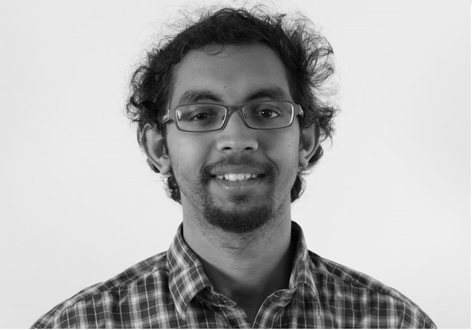

Srinivasan Arunachalam

I am a a Postdoctoral Researcher at the Center for Theoretical Physics at MIT. I received my PhD from Centrum Wiskunde & Informatica and QuSoft, Amsterdam, Netherlands, supervised by Ronald de Wolf.
Before that I finished my M.Math in Mathematics from University of Waterloo and Institute of Quantum computing, Canada in 2014, supervised by Michele Mosca.
Research interests
Quantum algorithms, Quantum learning theory, Quantum complexity theory, Quantum optimization, Analysis of Boolean functions.
Contact information
Email: arunacha (at) mit (dot) edu.
Address: 6-307, Center of Theoretical Physics, MIT.
Papers
- Two new results about quantum exact learning
Srinivasan Arunachalam, Sourav Chakraborty,Troy Lee , Ronald de Wolf
[arXiv]
- Improved bounds on Fourier entropy and Min-entropy
Srinivasan Arunachalam, Sourav Chakraborty, Michal Koucký , Nitin Saurabh , Ronald de Wolf
[arXiv], [arXiv]
- Optimizing quantum optimization algorithms via faster quantum gradient computation
András Gilyén, Srinivasan Arunachalam, Nathan Wiebe
To be presented at ACM-SIAM Symposium on Discrete Algorithms (SODA), 2019
[arXiv]
- Quantum query algorithms are completely bounded forms
Srinivasan Arunachalam, Jop Briët, Carlos Palazuelos
Presented at Innovations in Theoretical Computer Science Conference (ITCS), 2018
To be presented at the 22nd Annual Conference on Quantum Information Processing (QIP 2019)
[arXiv], [ITCS 2018]
- A survey of quantum learning theory
Srinivasan Arunachalam, Ronald de Wolf
Computational Complexity Column, ACM SIGACT News, Vol. 48, June 2017.
[arXiv] [SIGACT Column]
- Optimal quantum sample complexity of learning algorithms
Srinivasan Arunachalam, Ronald de Wolf
Presented at the 20th Annual Conference on Quantum Information Processing (QIP 2017)
32nd Conference on Computational Complexity (CCC), Vol. 79, 2017
To appear in Journal of Machine Learning Research (JMLR)
[arXiv] [CCC 2017] [QIP 2017: Video|Slides], [JMLR]
- Optimizing the Number of Gates in Quantum Search
Srinivasan Arunachalam, Ronald de Wolf
Quantum Information & Computation, Vol. 17, 2017
[arXiv] [Quantum Information & Computation Vol. 17]
- Quantum hedging in two-round prover-verifier interactions
Srinivasan Arunachalam, Abel Molina, Vincent Russo
Proceedings of Theory of Quantum computation, Communication and Cryptography (TQC), 2017
[arXiv],[TQC 2017]
- On the robustness of bucket brigade quantum RAM
Srinivasan Arunachalam,Vlad Gheorghiu, Tomas Jochym-O’Connor, Michele Mosca, Priyaa Varshini Srinivasan
Presented at Asian Quantum information science (AQIS), 2015
Proceedings of Theory of Quantum computation, Communication and Cryptography (TQC), 2015
New Journal of Physics, Vol. 17, 2015
[arXiv] [TQC 2015] [New Journal of Physics: Article|Video abstract]
- Is absolute separability determined by the partial transpose?
Srinivasan Arunachalam, Nathaniel Johnston, Vincent Russo
Quantum Information & Computation, Vol. 15, 2015
[arXiv] [Quantum Information & Computation Vol. 15]
Some older projects
Hard satisfiable 3-SAT instances via auto-correlation
Srinivasan Arunachalam, Ilias Kotsireas
Journal on Satisfiability, Boolean Modeling & Computation, Vol. 10, 2016
Proceedings of SAT Competition 2014
[SAT competition] [Journal version]
Evaluation of Riemann Zeta function on the Line Re(s) = 1 and Odd Arguments
Srinivasan Arunachalam
[arXiv]
A Substitution to Bernoulli Numbers in easier computation of ?(2k)
Srinivasan Arunachalam
[arXiv]
Thesis
Quantum Speed-ups for Boolean Satisfiability and Derivative-Free Optimization.
Srinivasan Arunachalam
Master's thesis (2014)
University of Waterloo. [PDF]
Quantum algorithms and learning theory.
Srinivasan Arunachalam
PhD thesis (2014)
University of Amsterdam. [PDF]
External links: Google Scholar, ArXiv